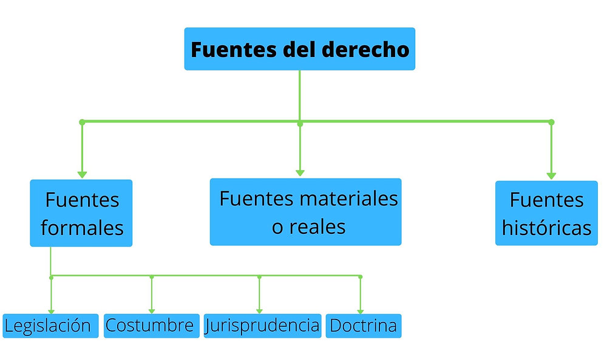

| Concepto | Definicion | Imagen | Mas informacion |
| ¿Qué es el Derecho? | Es un sistema de normas y principios, creado por la sociedad, que regula la conducta humana para garantizar la convivencia, la justicia y el orden social. | |
Consulta para mas informacion |
| La Norma Jurídica | Son las reglas de conducta obligatorias respaldadas por el Estado. Se caracterizan por ser coercibles (se pueden imponer por la fuerza), bilaterales (crean derechos y obligaciones) y externas. | Consulta para mas informacion | |
| Fuentes del Derecho | Son los procesos y documentos de donde nacen las leyes. Incluyen la legislación (códigos y constituciones), la jurisprudencia (criterios emitidos por los tribunales), la costumbre y la doctrina (estudios de los juristas) |  |
Consulta para mas informacion |
| Aprende mas de Derecho a traves de la UNAM, da click en la imagen | |||